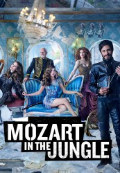

")
 
 IMDB-Wertung: 8.2 / 10
IMDB-Wertung: 8.2 / 10  Metascore:
Metascore: 
Die Geschichte von Mozart in the Jungle basiert auf den Memoiren von Blair Tindall, einer berühmten amerikanischen Oboistin. Die halbstündige Comedy beschäftigt sich mit den Dramen sowie komischen Ereignissen, die sich hinter den Kulissen eines großen Symphonieorchesters in New York abspielen.Nachdem nämlich Chefdirigent Thomas (Malcolm McDowell) seine Arbeit an den Nagel gehängt hat, wirbelt sein exzentrischer Nachfolger Rodrigo (Gael Garcia Bernal) die Ansammlung an talentierten Musikern gehörig durcheinander. Unter diesen befindet sich auch die junge Hailey (Lola Kirke), die eine Chance in Rodrigos neuem Ensemble bekommt und so ihrem Traum von einer Karriere als Star-Oboistin immer näher kommt.
Jahr: 2014
Dauer: 28 Minuten
FSK:
Land: USA Studio: Amazon Instant VideoTonspuren: DD5.1 - ,
Untertitel:
Auflösung: 720p (1280x720) Größe: 128000 MB
Genre: Drama, Musik, Komödie, TV-Serie
Regisseur: Paul Weitz, Tricia Brock, Roman Coppola, Adam Brooks, Bart Freundlich,  Patricia Rozema, Daisy von Scherler Mayer, Daryl Wein, Jason Schwartzman, Gael García Bernal, Will Graham, Azazel Jacobs
Patricia Rozema, Daisy von Scherler Mayer, Daryl Wein, Jason Schwartzman, Gael García Bernal, Will Graham, Azazel Jacobs
Drehbuch: Ades Zabel
Soundtrack:
Darsteller:
 Gael García Bernal als Rodrigo
Gael García Bernal als Rodrigo Lola Kirke als Hailey
Lola Kirke als Hailey Saffron Burrows als Cynthia
Saffron Burrows als Cynthia Mark Blum als Union Bob
Mark Blum als Union Bob Malcolm McDowell als Thomas
Malcolm McDowell als Thomas Adam David Thompson als Craig G
Adam David Thompson als Craig G Debra Monk als Betty
Debra Monk als Betty Peter Vack als Alex
Peter Vack als Alex Jennifer Kim als Sharon
Jennifer Kim als Sharon Gretchen Mol als Nina
Gretchen Mol als Nina Brennan Brown als Edward Biben
Brennan Brown als Edward Biben Jason Schwartzman als Bradford Sharpe
Jason Schwartzman als Bradford Sharpe Monica Bellucci als Alessandra
Monica Bellucci als Alessandra Wallace Shawn als Winslow
Wallace Shawn als Winslow Dermot Mulroney als Andrew Walsh
Dermot Mulroney als Andrew Walsh John Hodgman als Marlon
John Hodgman als Marlon Emilio Echevarría als Maestro Rivera
Emilio Echevarría als Maestro Rivera Andrew Elvis Miller als Lars
Andrew Elvis Miller als Lars Esai Morales als Juan Delgado
Esai Morales als Juan Delgado Jerry Adler als Lazlo
Jerry Adler als Lazlo Tenoch Huerta als Manu
Tenoch Huerta als Manu Alessandro Bressanello als Lionel
Alessandro Bressanello als LionelDatei: X:\HD-Serien\Mozart in the Jungle\S01\Mozart in the Jungle S01E01 Pilot.mkv seit 13.02.2017
Festplatte: HD Serien(I-ST)
 Es gibt insgesamt 182 Filme in der Gruppe 'HD-Serien'
Es gibt insgesamt 182 Filme in der Gruppe 'HD-Serien'